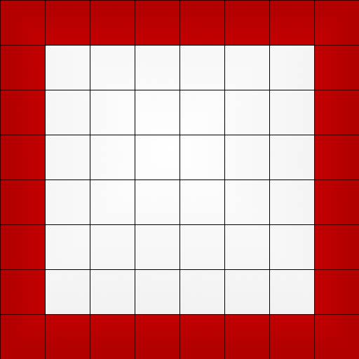
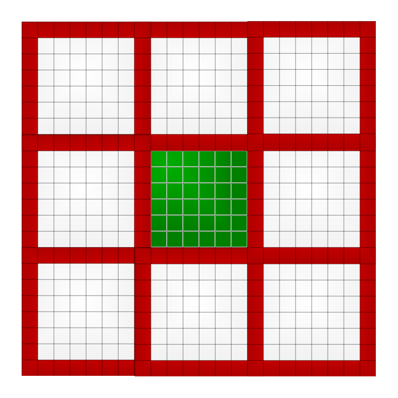
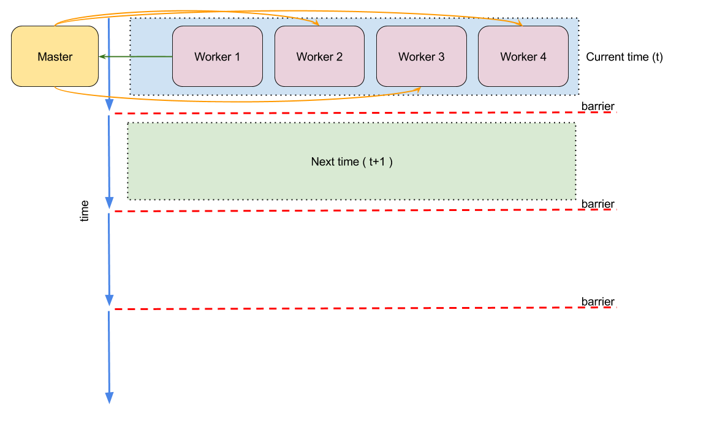

Simulation
Parallel project
Created by Gabriele Di Bari / Mirco Tracolli
Description
The project implement the Game of Life automata dividing the grid in multiple parts and assigns this parts to some workers.
Implementation
We choose to implement a master / slave approach, were the master coordinates the workers (slaves) and each process communicates via messages.
Worker grid

Each worker has a personal area and a boundary area.
Grid

Each worker will have 8 neighbors.
Grid

The grid will be treated like a toroidal surface.
Timeline

Results
The results will be written in a folder where we memorize for each worker its states during the simulation.
Viewer
To make the results human readable was written a small viewer using NW.js.
THE END
- Check the README for more information.
- Check the Game of Life Parallel Simulation for C++ version.